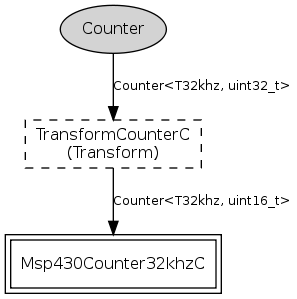

Component: tos.chips.msp430.timer.Counter32khz32C
configuration Counter32khz32C
Counter32khz32C provides at 32-bit counter at 32768 ticks per second.
- Author:
-
Cory Sharp <cssharp@eecs.berkeley.edu>
- See:
-
Please refer to TEP 102 for more information about this component and its
intended use.
Provides
interface
Counter<T32khz, uint32_t>
Wiring
